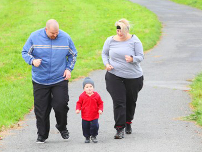
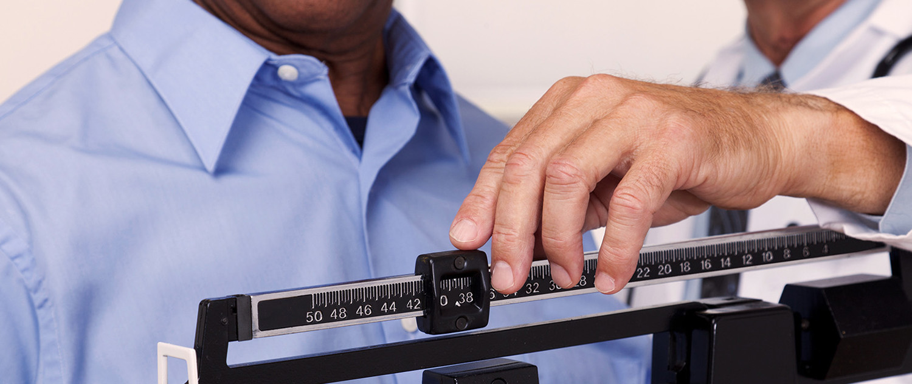

Overweight - extra body weight that includes muscle, bone, fat, and water.
Obesity - high amount of extra body fat.
Overweight and obesity together make up one of the leading preventable causes of death in the U.S. More than a third of U.S.adults are obese. Approximately 17%, of U.S. children and adolescents ages 2 to 19 are obese. Nearly 72 million adults in the United States can be defined as obese.
Most health care professionals agree that men with more than 25 percent body fat and women with more than 30 percent body fat are considered obese. Worldwide, approximately 2.5 million deaths occur annually because of obesity-related comorbidities. Approximately 280,000 adult deaths in the United States each year are related to obesity.
Measurement of Obesity:
BMI
The most common method of measuring obesity is the Body Mass Index (BMI). BMI is calculated by dividing body weight (kilograms) by height (metres) squared.
| Category |
Mass Index (kg/m2) |
Over Ideal body weight % |
| Under weight |
< 18.5 |
|
| Normal |
18.5 – 24.9 |
|
| Over weight |
25 – 29.9 |
|
| Obesity (class 1) |
30 – 34.9 |
>20% |
| Severe Obesity(class 2) |
35 – 39.9 |
>100% |
| Severe Obesity(class 3) |
40 – 49.9 |
|
| Superobesity |
>50 |
>250% |
Obesity can also be measured by waist-to-hip ratio. Waist-to-hip ratio is a measurement tool that looks at the amount of fat on the waist, compared with the amount of fat on the hips and buttocks. The waist circumference tells the amount of stomach fat. Increased stomach fat is associated with type 2 diabetes, high cholesterol, high blood pressure, and heart disease. A waist circumference of more than 40 inches in men and more than 35 inches in women may increase the risk for heart disease and other diseases tied to being overweight. Visceral or centeral, fat is more metabolically active than peripheral fat and is associated with type 2 diabetes, dyslipidemia (elevated triglyceride and reduced high-density lipoprotein [HDL] levels), high blood pressure, and increased risk for cardiovascular atherosclerotic disease.
The waist-to-hip ratio helps to identify patients with excess visceral adiposity. Women with a waist-to-hip ratio > 0.8 and men with a ratio > 1.0 are considered to have excess central adiposity that confers risk for developing the metabolic syndrome.
The diagnosis of morbid obesity is established by determining the patient’s BMI and the presence of any significant comorbid conditions.
| Parameter |
Criterion |
| Central Obesity |
| Waist circumference in men |
>102 cm |
| Waist circumference in women |
>88cm |
| Hypertriglyceridemia |
≥150 mg/dl |
| Low high-density lipoprotein cholesterol |
| Men |
<40mg/dl |
| Women |
><50 mg/dl |
| High blood pressure |
≥130/≥85 mm Hg |
| Fasting Blood glucose |
≥110 mg/dl |
*Three or more of these criteria need to be present.
Visceral Fat is body fat that is stored within the abdominal cavity and is therefore stored around a number of important internal organs such as the liver, pancreas and intestines. Storing higher amounts of visceral fat is associated with increased risks of a number of health problems including type 2 diabetes.
Abdominal obesity, also known as central obesity, is when excessive abdominal fat around the stomach and abdomen has built up to the extent that it is likely to have a negative impact on health. There is a strong correlation between central obesity and cardiovascular disease.
Peripheral Fat accumulates right under the skin and is evenly distributed over the body surface area.
Females are more likely to deposit fat in the peripheral tissues and males tend to deposit it in the abdominal compartment. As obesity develops, the size and number of fat cells increase.
Causes of obesity:
The development of obesity involves the interactions between excessive caloric intake, inefficient use of food energy, reduced metabolic activity, a reduction in the thermogenic response to meals, and an abnormally high set point for body weight.
-
Genetics. Studies show that the likelihood of becoming obese is passed down through a family's genes. Genes, for instance, may affect where to store extra fat in the body.
-
Metabolism factors. How your body uses energy is different from how another person's uses it. Metabolism and hormones differ from person to person, and these factors play a role in weight gain.
-
Polycystic ovary syndrome (PCOS), a condition characterized by high levels of androgens (male hormone), irregular or missed menstrual cycles. A woman with PCOS is more likely to be obese. Hypothyroidism, a condition in which the thyroid gland fails to produce enough thyroid hormone.
-
Socioeconomic factors
-
Lifestyle choices. Overeating and a lack of exercise both contribute to obesity.
-
Medicines. Medicines like corticosteroids, antidepressants, and antiseizure medicines can cause weight gain.
-
Emotions. Emotional eating – can lead to weight gain. Too little sleep may also contribute to weight gain.

Health consequences of obesity:
Most obesity-related deaths result from complications related to diabetes, cancer, and cardiovascular disease.
-
Severe obesity can adversely affect every organ system.
-
Diabetes, cancer, and cardiovascular disease are common in obese patients.
-
Central adiposity is associated with the presence of the metabolic syndrome.
-
High blood pressure. Excess weight needs more blood to circulate to the fat tissue and causes the blood vessels to become narrow (coronary artery disease). This makes the heart work harder, because it must pump more blood against more resistance from the blood vessels and can lead to a heart attack (myocardial infarction). Excess weight also raises blood cholesterol and triglyceride levels and lowers HDL ("good") cholesterol levels, adding to the risk of heart disease.
-
Type 2 diabetes. Obesity is the major cause of type 2 diabetes. Obesity can make your body resistant to insulin, the hormone that regulates blood sugar. Even moderate obesity dramatically increases the risk for diabetes.
-
Heart disease. Atherosclerosis, or hardening of the arteries, happens more often in obese people. Coronary artery disease is also more common in obese people because fatty deposits build up in arteries that supply the heart.
- Cancer. Being overweight or obese increases the risk for a variety of cancers. Obese women increase their risk for breast cancers. Men who are overweight have a higher risk for prostate cancer. Both men and women who are obese are at increased risk for colorectal cancer.
-
Metabolic syndrome. Metabolic syndrome has several major risk factors. These are stomach obesity, high blood triglyceride levels, low HDL cholesterol levels, high blood pressure, and insulin resistance (severe type 2 diabetes). Having at least three of these risk factors confirms the diagnosis of metabolic syndrome.
-
Large waist circumference. Men who have waist circumferences greater than 40 inches, and women who have waist circumferences greater than 35 inches, are at higher risk of diabetes, dyslipidemia (abnormal amounts of fat in the blood), high blood pressure, and heart disease.

-
Pulmonary (breathing) problems, including sleep apnea in which a person can stop breathing for a short time during sleep. ( JDRF).
-
Reproductive problems in women, including menstrual irregularities and infertility.
-
Gallbladder disease and gallstones.
-
Osteoarthritis, a disease in which the joints deteriorate. This is possibly the result of excess weight on the joints.
-
Some cancers (endometrial, breast, colon, kidney, gallbladder, and liver)
-
Mental illness such as clinical depression, anxiety, and other mental disorders.
-
Due to its association with insulin resistance, the risk of polycystic ovarian syndrome (PCOS) increases with adiposity.In the US approximately 60% of patients with PCOS have a BMI greater than 30.
-
Obesity leads to infertility in both men and women. Obese women have more than twice the rate of C-sections compared to women of normal weight. Obese women also have increased risk of preterm births and low birth weight infants.
-
risk of migraine rises 50% by BMI of 30 kg/m2 and 100% by BMI of 35 kg/m2.
-
High body mass index (BMI) is associated with a higher risk of developing ten common cancers including 41% of uterine cancers and at least 10% of gallbladder, kidney, liver and colon cancers in the UK.
-
Obesity increases one's risk of chronic kidney disease by three to four times.
Prevention:
Maintaining a healthy weight requires a balance of the calories consumed from foods and beverages with the calories expended through physical activity and normal metabolism.
-
Eat plenty of vegetables, fruits, and whole-grain products.
-
Eat a variety of nutritious foods in order to avoid vitamin deficiencies
-
Include low-fat or non-fat milk or dairy products.
-
Increase dietary fiber intake.
-
Maintain a diet in which 50% to 55% of calories come from complex carbohydrates
-
Choose lean meats, poultry, fish, lentils, and beans for protein.
-
Drink lots of water.
-
Limit fruit juice and sodas.
-
Limit consumption of sugar and saturated fat.
-
Moderate exercise has been shown to decrease blood pressure, increase HDL levels and reduce triglyceride levels.
-
20 to 30 minutes of moderate exercise 5 to 7 days a week
-
Lower intakes of meats, including processed meats; processed poultry; sugar-sweetened foods, particularly beverages; and refined grains.
Small changes can lead to significant benefit over time. In addition to healthy eating, an active lifestyle will help to maintain weight. More physical activity will increase the amount of calories burns. Weight loss of 5 to 10 % lowers blood pressure and other risk factors. Patients with a BMI > 35 kg/m2 with obesity-related comorbidities, and those with a BMI > 40 kg/m2 with or without comorbidities are currently eligible for
bariatric surgery
National Institutes of Health (NIH) guidelines recommended that bariatric surgery be limited to patients aged 18 to 60 years.
References: